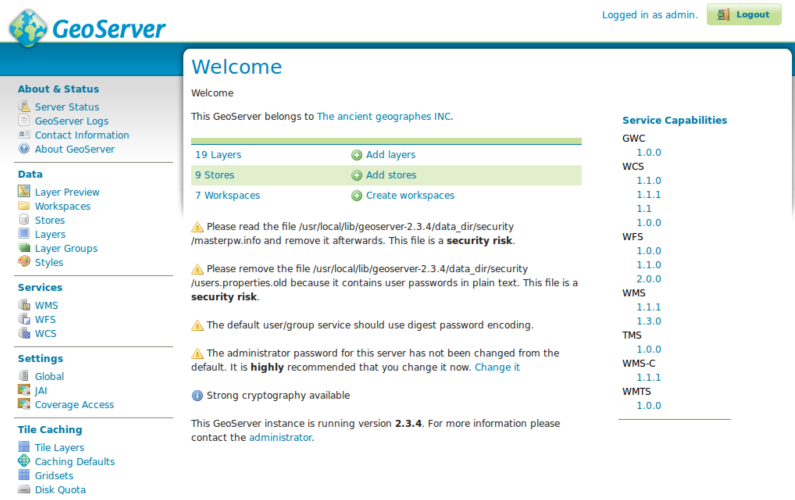
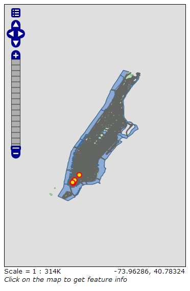
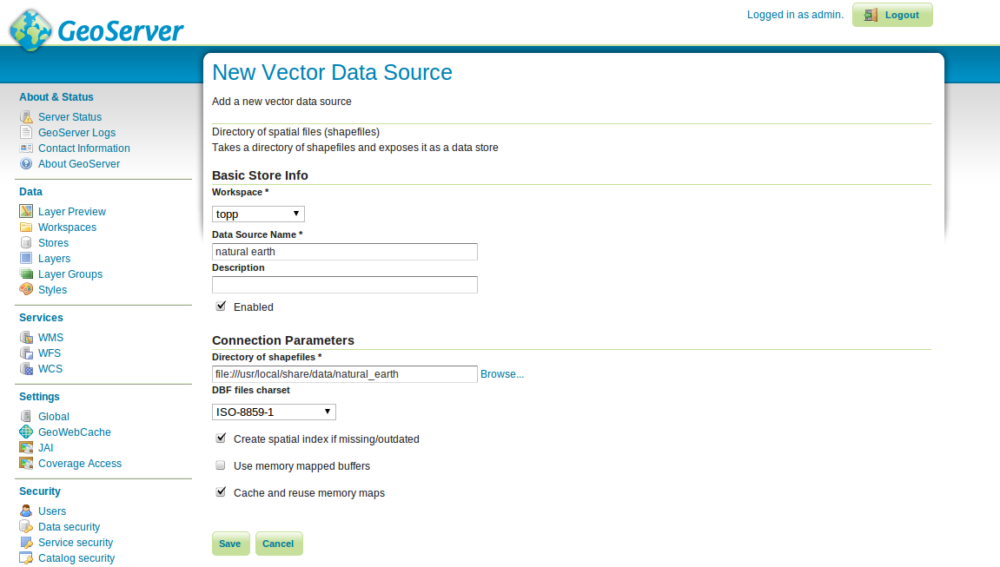
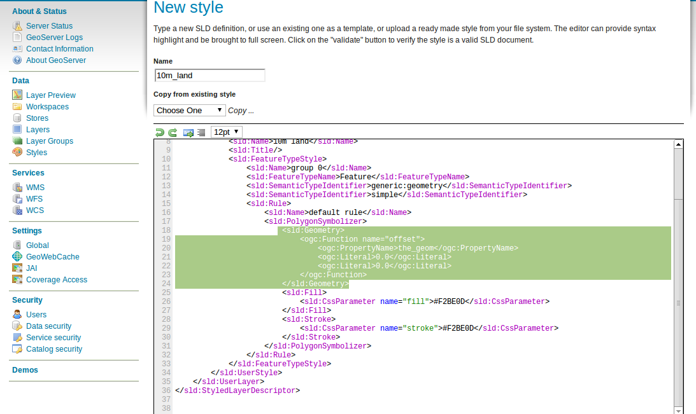

Guía Rápida de GeoServer¶
Geoserver es una aplicación Java que sirve mapas (y datos) para que otras aplicaciones cliente los representen.
Esta guía de inicio rápido describe como:
- agregar origenes de datos vectoriales y raster a GeoServer
- aplicar color a las entidades gráficas usando estilos
- testear las capas en un mapa web simple
- aprender acerca de los clientes que pueden desplegar sus mapas
- anadir una capa desde un archivo NetCDF
Contents
Iniciar GeoServer¶
- Seleccione el ícono en el menú
- La aplicación tardará unos segundos en iniciar y abrirá una página web en http://localhost:8082/geoserver/web

Primeras Vistas¶
Cuando abra por primera vez la pagina de GeoServer vera la pantalla de arriba, primero necesita loguearse usando el usuario admin y la password geoserver. Entonces verá la página de administración
El enlace Previsualización de Capas en el menú de la izquierda le permite previsualizar las capas que están cargadas en el servidor.

esplacese hasta el final de la página y haga click en el enlace OpenLayers **en la fila **tiger-ny. Esto abrirá una nueva ventana con una previsualización de algunos de los datos de ejemplo.
Puede hacer zoom en el mapa de tres formas:
- haciendo click en la barra de zoom de la izquiera, cuanto mas arriba mayor sera la ampliación.
- usando la rueda de scroll del mouse (si tiene una), hacia arriba se acerca y hacia abajo se aleja.
- definiendo un rectángulo sobre el mapa mientras presiona la tecla
shift key- esto hará zoom al rectángulo seleccionado (o lo mas aproximado que entre en la pantalla).
Experimente con esta vista y vea tambien la previsualización de las otras capas. Cuando se sienta cómodo visualizando datos puede continuar agregando nuevos datos.
Cargando Datos¶
Nota
No podrá realizar los siguientes pasos si esta ejecutando desde un sistema de archivos de solo lectura (como el DVD). Necesita ejecutarlo en una Máquina Virtual, o desde un USB o instalar OSGeoLive (o sólo GeoServer) en su disco duro.
En este ejemplo vamos a usar el conjunto de datos Natural Earth que está incluido en el Live-DVD (/usr/local/share/data/natural_earth2/).
Necesitamos crear un Almacén de datos (Store) para nuestros datos. En la página de administración de GeoServer vaya a Stores y haga click en Add new Store. Verá la siguiente página:

Seleccione Directory of spatial files, y verá lo siguiente:
Escriba un nombre para el almacén de datos - Usamos Natural Earth y completamos la URL al conjunto de datos - en este caso /usr/local/share/data/natural_earth2/. Se puede usar el botón de navegar para encontrar los datos si están en algún otro sitio. Presione Guardar.

Presione publicar en la fila de uno de las capas para finalizar la incorporación de datos. Esto lo llevará a la página Capas (Layers):

A medida que baje por la pagina verá que GeoServer ha llenado varios campos por usted. Cuando llegue a Coordinate Reference System podrá ver que en el campo Native SRS dice UNKNOWN. Necesitará completar el siguiente campo (declared SRS) para asegurarse que GeoServer sabe donde se localizan los datos. Por el momento confíe en nosotros y escriba epsg:4326 en ese campo, y si no confía vaya a http://prj2epsg.org/search y copie el texto que ve cuando hace click junto a «UNKNOWN». Haga click en Compute from data`y :guilabel:`Compute from native bounds para completar los Bounding Boxes. Finalmente presione save y habrá publicado su primera capa.
Nota
No se preocupe si la vista previa de la capa no luce muy bien usando el estilo por defecto. En la siguiente sección veremos como producir un estilo más agradable.
Puede seguir el siguiente paso con las otras capas del directorio usando el botón de guilabel:Add a new resource en la página de capas. En este caso, seleccionar el Almacén de datos de natural earth de la caja desplegable para volver a la página de Almacenes de Datos.
Aplicando estilos¶
Para aplicar un estilo a un conjunto de datos de una capa, GeoServer usa un estándar OGC llamado Descriptores de capas estilizadas - Styled Layer Descriptors (SLD) Estos descriptores se representan como archivos XML que describen las reglas que se utilizan para aplicar varios simbolizadores a los datos.
Para empezar, estilizamos los conjuntos de datos Land y Ocean. Se puede crear un archivo SLD utilizando un sencillo editor de textos, pero a veces es mejor usar un editor gráfico. Hay varias opciones para ello, pero nos gusta usar uDig ya que permite abrir los archivos shape directamente y aplicarles estilos simples utilizando una interfase gráfica, y también tiene un editor simple para modificar el XML si es necesario.
Usando uDig para crear estilos simples¶
Nota
Para mas detalles sobre como usar uDig ver uDig Quickstart
Una vez abierto uDig y agregados los shapefiles (usando el botón add data que está en la esquina superior izquierda). Arrastrar las tablas ne_10m_land y ne_10m_ocean en la ventana de mapas. uDig aplica automáticamente un estilo (para que se puedan visualizar los datos).

Obviamente un océano anaranjado no se ve bien (aunque la tierra verde es aceptable). Asi que en Layer list seleccione el botón de estilos (se ve como la paleta de un artista).

Esto abrirá el panel de estilos Style Pane - en la ventana se puede seleccionar fácilmente un buen azul para los océanos haciendo clic sobre el rectángulo de color junto a la etiqueta relleno (fill) y eligiendo de la paleta de colores que ofrece. También se puede incrementar la opacidad hasta el 100% para que el color se vea mejor. Elegimos el mismo color azul para el borde.

Una vez listo, hacer click en OK y uDig mostrará los cambios.

Finalmente preferimos un color mas significativo para la tierra que el verde de manera que repetimos los pasos explicados para cambiar el color de la capa de tierra. Ninguno de los colores predeterminados nos parece adecuado, así que vamos a la sección define custom colors para crear uno que nos guste.

Esto da como resultado un mapa básico del mundo que se ve bien

Agregando el estilo a GeoServer¶
Ahora necesitamos pasar estos estilos a GeoServer - en la ventana de estilos hay un botón de exportar que permite guardar el fichero SLD que define nuestro estiilo. Una vez salvados los dos estilos se puede ir a la página de administración de GeoServer y seleccionar «Styles» (al final de la sección «Data»). Entonces seleccionamos el enlace «Add New Style», al final de la página, con una caja para subir un archivo y un botón de navegación. Haciendo clic en éste, nos permite buscar en el disco duro los ficheros que acabamos de guardar. Una vez encontrados, pulsamos el enlace de subir (junto al botón de navegar) y una copia del archivo aparecerá en el editor. Si hacemos clic en el botón de validar, aparecerá un error en las líneas destacadas, pero podemos ignorarlas con seguridad (o borrar esas líneas, ya que no hacen nada). Cuando hayamos terminado, pulsar Submit al final de la página.
Agregando el estilo a la capa¶
Clic en el enlace Layers en el menú de la izquierda de la ventana de GeoServer. Clic en la capa (ej. ne_10m_land), y seleccionar la pestaña Publishing y cambiar en el cuadro Default Style al nombre del estilo que hemos cargado en la sección anterior. Ahora pulsar en Save e ir a la página de Previsualizar capa (Layer Preview) para comprobar que se ve bien.
Nota
Hay archivos de estilos de ejemplo para todas las capas de ejemplo de Natural Earth en /usr/local/share/geoserver.
Clientes para capas WMS¶
Existen una gran variedad de clientes que utilizan las capas WMS que se sirven desde GeoServer. Esta es una lista de algunos de ellos:
NetCDF¶
El plugin NetCDF de GeoServer permite la publicación de rasters de archivos NetCDF.
Configurar una tienda NetCDF¶
Después de ejecutar «Start GeoServer», inicie sesión como administrador, haga clic en «Add stores» y luego en «NetCDF». Escriba un valor para Nombre del origen de datos (este ejemplo utiliza «netcdf») y una dirección URL de NetCDF. Puede utilizar este archivo de ejemplo:
file:///usr/local/share/data/netcdf/polyphemus_20120401.nc
Pulse «Save», «Publish» la capa «O3», luego desplácesehasta la parte inferior de la pestaña «Data» y presione «Save» de nuevo.

{kind=link}
{kind=link}
{kind=link}
{kind=link}
Vista previa de la capa NetCDF¶
Seleccione «Layer Preview» en el menú de la izquierda, desplácese hacia abajo para encontrar la entrada «cite:O3» y haga clic en el enlace «OpenLayers» para mostrar una vista previa de la capa. Al hacer clic en los puntos hará que el valor de «Ozone_concentration» se muestre en una tabla en la parte inferior del mapa.
{kind=link}
Nota
Esta instancia de GeoServer se ha configurado con la propiedad de sistema Java NETCDF_DATA_DIR para permitir la publicación de archivos NetCDF en directorios de solo lectura.
¿Qué sigue?¶
Esto es sólo el primer paso en el camino al uso de Geoserver. Hay mucha más funcionalidad que usted puede probar.
Página de GeoServer
Manual de usuario de GeoServer
Tutoriales de GeoServer
Taller de estilos de GeoServer